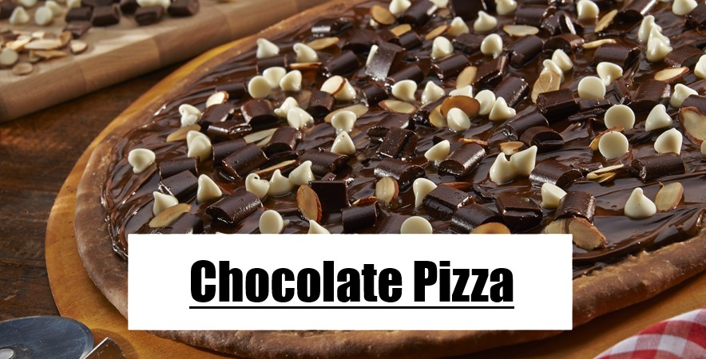
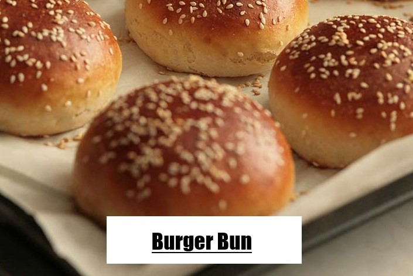
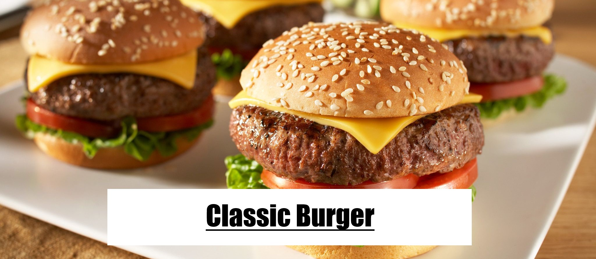
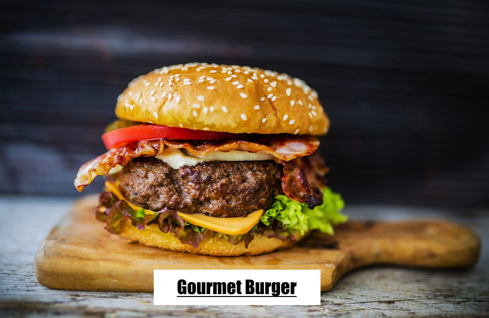
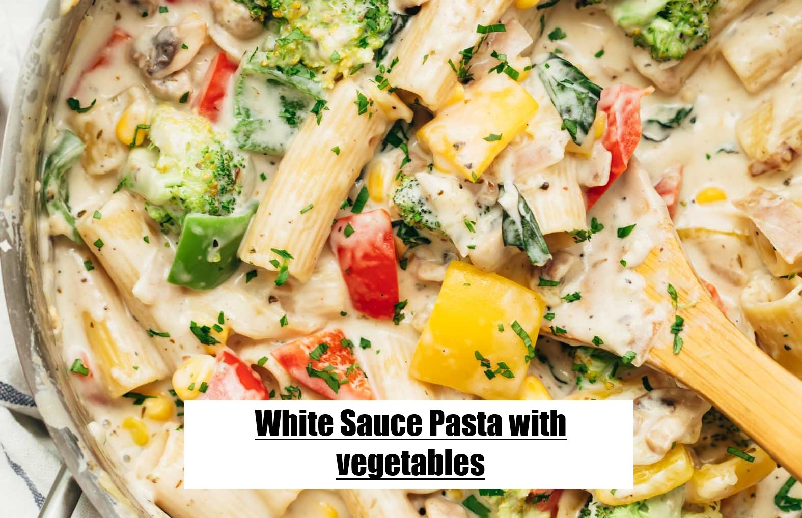

×
Info! Recipe details are directly from our kitchen or from our Moms’ recipe notes.
Cooking videos provided here are from internet. That’s why, they can vary a little bit.
We apologize! You can try any of them or customize your dish in your own way. Good luck!!

About
Chocolate pizza combines chocolate and pizza, two popular ingredients among school-aged children. The confluence of pizza and chocolate developed in parallel in several Western countries and has become a dessert purveyed in franchise and chain restaurants. Chocolate pizza is also known as a Valentine's Day,Easter and Christmas holiday treatIngredients
For pizza toppings
- 2 teaspoons butter, melted
- 2 tablespoons cocoa powder
- 1/4 cup chocolate-hazelnut spread (recommended: Nutella)/melted Dark chocolate
- 1/2 cup semisweet chocolate chips
- 4 tablespoons white chocolate chips
- 2 tablespoons chopped hazelnuts, toasted
For pizza Dough
- 3/4 cup all purpose flour
- 2 spoon yeast
- Salt on taste
- 2 spoon oil
Direction
Pizza Dough
Related Video
Step 2:Mix the flour and salt in another bowl , add the yeast mixture and also oil. Blend just until the dough forms. Turn the dough out onto lightly floured surface and knead until smooth, about 1 minute. Transfer the dough to a large oiled bowl and turn the dough to coat with the oil. Cover the bowl with plastic wrap and set aside in a warm draft-free area until the dough doubles in volume, about 1 hour
Step 3:Punch the down dough and form into ball. The dough can be used immediately or stored airtight in the refrigerator for 1 day.
Final Pizza
Step 2:Immediately spread the chocolate-hazelnut spread over the pizza then sprinkle all the chocolate chips over. Bake just 20 minutes about 200-220C to melt the chocolate and crisp the dough.Then sprinkle the hazelnut ,cut into wedges and serve.

About
Pizza is a savory dish of Italian origin consisting of a usually round, flattened base of leavened wheat-based dough topped with tomatoes, cheese, and often various other ingredients (such as anchovies, mushrooms, onions, olives, pineapple, meat, etc.) which is then baked at a high temperature, traditionally in a wood-fired oven.A small pizza is sometimes called a pizzettaIngredients
For pizza toppings
- 200gm chicken
- 2 spoon lemon juice
- 1 spoon red chili powder
- 1 spoon black pepper
- sliced 6/7 pieces of mushroom
- 1spoon Garam masala
- 1spoon sugar
- salt on taste
- 4 spoon bbq sauce
- 3/4 spoon pizza sauce
- 1/2 cup of cheese
- 1/4 cup green/red capsicum
- 1spoon sweet corn
- 1spoon oregano
- About 1 pound of dough(the dough recipe is attached previous recipe without using cocoa powder)
Direction
Pizza Toppings
Related Video
Final Pizza
Step 2:Spread the pizza sauce over the pizza and sprinkle with capsicum and place your desired toppings on the pizza.And at last add the load of cheese how much you want and also sprinkle some oregano
Step 3:With zigzag design pour the bbq sauce on the top of pizza.Then bake just 20 minutes about 200-220C to crisp the dough and melt the cheese. Cut into wedges and serve.

About
A bun is a small, sometimes sweet, bread, or bread roll. Though they come in many shapes and sizes, they are most commonly hand-sized or smaller, with a round top and flat bottom.Tap here to see the list of bunsIngredients
- 2 Cup all purpose flour
- 1 cup milk
- 1.5 spoon yeast
- 2 Spoon sugar
- 1 Egg
- 3 spoon butter/oil
- 1 spoon whitw sesame
- salt on taste
Direction
Related Video
Step 2:Then in a bowl take the flour,yeast mixture,salt ,oil/butter and the egg.Knead the mixture about to 10 minutes . Transfer the dough to a large oiled bowl and turn the dough to coat with the oil. Cover the bowl with plastic wrap and set aside in a warm draft-free area until the dough doubles in volume, about 1 hour
Step 3:.After 2x volume divided the dough into 4 small pieces and shape them round .And keep this rounded dough on top of the oil brushed tray.Keep it aside covering a towal about to 40 minutes
Step 4:.Then brush the egg/milk on top of the every bun dough and sprinklw white sesame .Bake them 20 minutes within 200-220C.

About
A hamburger (also burger for short) is a sandwich consisting of one or more cooked patties of ground meat, usually beef, placed inside a sliced bread roll or bun. The patty may be pan fried, grilled, smoked or flame broiled. Hamburgers are often served with cheese, lettuce, tomato, onion, pickles, bacon, or chiles; condiments such as ketchup, mustard, mayonnaise, relish, or a "special sauce", often a variation of Thousand Island dressing; and are frequently placed on sesame seed buns. A hamburger topped with cheese is called a cheeseburger.Ingredients
- 1/4 pounds ground beef chuck/500 gm minched chicken
- freshly ground pepper
- Oil, for grill grate and brushing buns, optional
- 4 sesame seed buns, split
- 4 lettuce
- 4 slices of cedder cheese
- 4 tomato slices
- 4 red onion slices
- Mustard, for serving
- Pickles, for serving
Direction
Related Video
Step 2: Break the beef/chicken up in a large bowl and season with 1/2 teaspoons salt and 3/4 teaspoon pepper. Gently mix just to combine, then form into 4 (4 1/2-inch) patties, making a slight indentation in the center of each patty.
Step 3:Brush the grill grate with oil. Evenly space the burgers on the grill and cook, turning once, until grill marks appear, 4 to 6 minutes total for medium. (Resist the urge to press down on the burger with a spatula as they cook.) Remove burgers from grill and let rest 1 to 2 minutes.
Step 4:. Brush cut side of buns lightly with oil and grill cut-side down until light golden brown, if desired. Put a burger on the bottom of each bun and top with lettuce, tomato, onion, ketchup, mustard, pickles and bun top.And also with a slice of cedder cheese

Ingredients
- 1kg fatty minced beef
- 1 onion, grated
- 4 sprigs of thyme, finely chopped
- ½ cup parsley, finely chopped
- 1 egg, lightly beaten
- ½ cup fresh bread crumbs
- 2 tablespoons tomato sauce
- 1 tablespoons Worcestershire sauce
- Salt and pepper
- 6 baby lettuce leaves
- 1 tomato
- 6 slices good quality cheddar
- 5 tbsp whole egg mayonnaise
- 5 tbsp tomato sauce
- 6 rashers of Hala beef bacon (optional), fried
- 6 Burger Buns
Direction
Step 1:Combine the beef with the grated onion, herbs, egg, bread crumbs, tomato sauce and Wostorshire. Season well with salt and pepper. Mix well with your hands and knead until thoroughly combined. Separate the meat into six and roll into balls.
Step 2:To cook, heat the pan (or barbeque) to medium heat. Add a little oil and add the meat. Using a fish slice press down on each patty to flatten. Cook on each side for 3-5 minutes or longer if you would like them well done.
Step 3:To assemble the burgers: toast the buns under the grill with a slice of the cheese. Add a dollop of the mayonnaise and tomato relish and the burger patty. Add the lettuce, beetroot and tomato slices and finally the fried bacon if you desire.
Step 2:To cook, heat the pan (or barbeque) to medium heat. Add a little oil and add the meat. Using a fish slice press down on each patty to flatten. Cook on each side for 3-5 minutes or longer if you would like them well done.
Step 3:To assemble the burgers: toast the buns under the grill with a slice of the cheese. Add a dollop of the mayonnaise and tomato relish and the burger patty. Add the lettuce, beetroot and tomato slices and finally the fried bacon if you desire.

About
Pasta is the Italian designation or name given to a type of starchy noodle or dumpling food or dish typically made from grain flour, commonly wheat, mixed into a paste or dough, usually with water or eggs, and formed or cut into sheets or other shapes.And this raw pasta is cooked by many process where white sauce pasta is more popular worldwide.It is usually made by cream,cheess and some sorts of vegetables.Tap here to see the different shapes of pastas.
{kind=link}
Ingredients
- 150 grams Dried Pasta Macaroni /Penne /Fusilli / Orecchiette / Rigatoni
- 2 tablespoon Salt
- 5 cups Water
- 2 tablespoon Butter
- 4-5 cloves Garlic minced
- 1 cup Onion diced
- 6-7 Mushrooms halved
- 1 cup capsicum cubed (colored)
- 1 teaspoon Salt
- 1 teaspoon Pepper powder
- 1 teaspoon oregano
- 2 tablespoons All Purpose Flour
- 2 cupMilk
- 1/2 cup Cream
- 1 cup Mozzarella grated
- 2 tablespoon Basil shredded
Direction
Related Video
Step 2:In another pan, add olive oil and butter and heat till the butter has melted. Add minced garlic and onions, cook for a minute or two till the onions are translucent. Add mushrooms and the peppers. Season with salt, pepper and oregano and cook for 3-4 minutes, stirring occasionally.
Step 3:Add flour and cook stirring for a minute or two. Slowly start adding milk while stirring continuously till the sauce starts to thicken. Simmer for two minutes and add cream. Mix the cream and add the drained cooked pasta and cheese.
Step 4:Fresh basil (if using) and stir to mix everything together. Serve immediately.

About
Chocolate pizza combines chocolate and pizza, two popular ingredients among school-aged children. The confluence of pizza and chocolate developed in parallel in several Western countries and has become a dessert purveyed in franchise and chain restaurants. Chocolate pizza is also known as a Valentine's Day,Easter and Christmas holiday treatIngredients
For pizza toppings
- 200gm chicken
- 2 spoon lemon juice
- 1 spoon red chili powder
- 1 spoon black pepper
- sliced 6/7 pieces of mushroom
- 1spoon Garam masala
- 1spoon sugar
- salt on taste
- 4 spoon bbq sauce
- 3/4 spoon pizza sauce
- 1/2 cup of cheese
- 1/4 cup green/red capsicum
- 1spoon sweet corn
- 1spoon oregano
- About 1 pound of dough(the dough recipe is attached previous recipe without using cocoa powder)
Direction
Pizza Toppings
Related Video
Final Pizza
Step 2:Spread the pizza sauce over the pizza and sprinkle with capsicum and place your desired toppings on the pizza.And at last add the load of cheese how much you want and also sprinkle some oregano
Step 3:With zigzag design pour the bbq sauce on the top of pizza.Then bake just 20 minutes about 200-220C to crisp the dough and melt the cheese. Cut into wedges and serve.